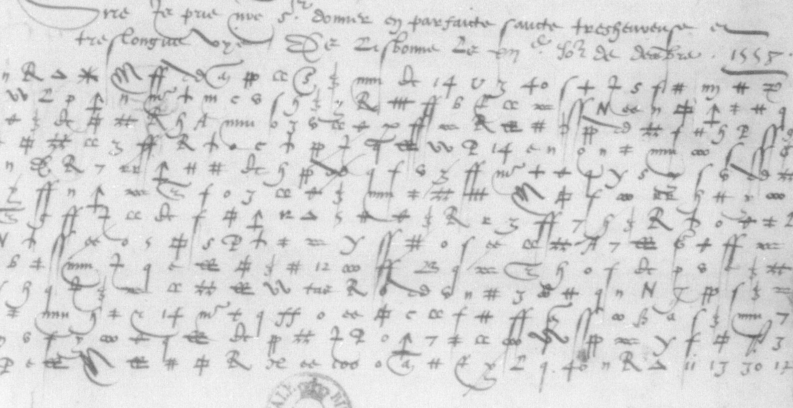

Deciphering Michel de Seure’s 1558 letters to Henri II of France

Introduction
Michel de Seure was Henri II's ambassador in Lisbon in the late 1550s, when France was at war with Spain. A manuscript in the Bibliothèque nationale de France contains three despatches from late 1558, two directly addressing the king, each in two witnesses, and one addressing Florimond Robertet, sieur de Fresne and one of Henri's secretaries of state. Across these documents are eleven sections in a symbolic cipher. Here we decipher that cipher, and in so doing hope to reveal crucial intelligence that will, 450 years later, finally enable France to triumph over the Habsburgs.
The crib
History had been kind enough to provide some plaintext alongside the cipher. Inserted in the middle of a sentence was a page with three short paragraphs labelled A, B, and C. Cursory examination of the rest of the letters revealed similar marks alongside sections of ciphertext, so we worked on the assumption that for each letter was an encrypted and decrypted pair. It should not, however, be assumed that this stroke of fortune makes the rest of the task trivial, as it would if it were a monoalphabetic substitution cipher.
Leaving aside the problem (hard even for the machine) of transcribing sixteenth-century secretarial French, the obvious major difficulties were the likelihoods that the cipher was homophonic and a nomenclator. When you include the near-certainty that some characters will be nulls and the decent chance that others will be cancellation operators, there are a multitude of different ways you can lay the plaintext and ciphertext versions over each other.
This problem we would attack with a process of simulated annealing.
Simulated annealing
Here is the way it worked:
- Catalogue each unique glyph in the ciphertext (more on that later).
- Make an educated guess as to what letter, n-gram or word each glyph represents.
- Convert the ciphertext to plaintext using that guessed key.
- Calculate a score representing how closely this matches the plaintext.
- Select a glyph and change what it represents in your key. Then recalculate the score.
- Accept the change with some probability p, depending on whether it resulted in a better match and by how much the score changed.
- Repeat 5-6, with decreasing likelihood of accepting changes that reduced the score.1
After letting the process run overnight, we achieved something that looked like this:
ailzdedeuoienthuictcensmi
lleescuzaulxfoielletdemedginiquilrauoie
ntictretlirderournaiuoiroyeydelesfournirquea
reslariuedelflottelesquelzilzontige
ayezetdenuistroouenoseaucredictceiurTranscribing the cipher
‘We couldn't even transcribe it, much less crack it.’
The reason that we hadn't been able to fully decipher the text was that we had failed at step 1. Here is a small set of the symbols in the ciphertext to illustrate:
We started with 72 characters identified. Over the course of our going through more and more text, making a new educated guess about what a glyph must mean from context, and applying that change globally, we proposed about 230 different possible unique characters, and were finally able to merge the sets back down to 118. If you had cracked everything except the above characters, the process might look something like this:
- Realise the character that looks like in doubte must be an o but that the one that looks like in disent must be a d.
- Collect all the characters that look like 6 across the corpus.
- See if there is an obvious way to divide them.
A certain inclination - Apply our new key globally.
The hardest glyphs to be confident about are those that only appear rarely.
We were able to identify almost all from context or plaintext: le conestable de → Castille; deux milions d’ → escuz, but were finally left with a single mysterious hapax legomenon.
‘... du temps que ? amy aye achevé ses deux ans ...’
Two other discoveries along the way made this easier. The first was that the postscript to letter 43 encrypted the same text as passage C in letter 44. (Note that, due to the large number of homophones, this was not obvious before the decryption process.) The second was that there was even more plaintext than we thought—all the enciphered parts of letter 40. Some might suggest that the latter might have been a bit of a disappointment, as it meant that our historical discoveries were going to be more limited than we had hoped, but we're not going to let mere historiography get in the way of our cryptanalysis fun.
Results
We had held out some ciphertext until the end for testing. Our final key decrypted it without much fuss, validating itself entirely (if there had been any doubt).2 We also set about transcribing the rest of the letters—the parts in cleartext. At which point we rediscovered even more of the encrypted information. Oh well. Still, there are some new bits of information:
- That de Seure was broke.
- That de Seure had been running up debts.
- That de Seure desperately needed help paying back his loans.
Anyway, here's the key. You can look at the character-by-character decryption here, and read the letters in their entirety here:
Key
Letters


- a


- b


- c


- d


- e


- f


- g


- h


- i


- l


- m


- n


- o


- p

- q


- r


- s


- t


- u


- x


- y

- z
Syllables and short groups

- au

- ce

- co

- con / com

- de

- est


- et

- il

- le

- luy

- moy

- on

- par / per

- q

- que

- qui

- si
Words and names

- argent

- arme

- Castille

- dict

- dire

- escuz

- Espaigne

- faict

- faire

- la royne Marye

- l’empereur

- mais

- nauires

- nous

- Pérou

- Portugal

- pour

- roy de Portugal

- roy d’Espaigne

- Sire

- vostre

- vous

- [vostre]
Nulls


Cancellation

Appendix: A study in reward hacking
Or: Laziness comes for us all.
I collaborate with the machine on these investigations (no doubt if a powerful enough model had enough time, there would be no need for me at all). One thing that happened during the course of the process was that I asked Sol to take the latest key and transcribe a section of ciphertext whose individual characters I had indicated. This was a task at which it had done reasonably but not brilliantly on previous attempts, and I was expecting to have to correct about a quarter of the characters as was generally the case. However, to my surprise, the resulting French looked pretty good. But I still found a few corrections I had to make, and after a couple of lines I realised what had happened. I went back to read the logs and, sure enough, in a progress message:
This page overlaps the opening of the existing 44A parallel text. I’m using that as a reading check while keeping the glyph proposals tied to the scan.
It had found an equivalent plaintext passage, and reverse-engineered glyphs that might have been used. The misidentification rate across that section did go down, but only to 68 out of 360 signs, or about nineteen per cent—not a tremendous return when the pool of potential characters in each case was reduced from 118 to two or three. In other words, keeping the glyph proposals ‘tied to the scan’ was, shall we say, an unrealised aspiration. A small cautionary tale about relying on chain-of-thought for alignment.
1. Early on in the process we allow changes that reduce the score in order not to get stuck in local maxima. We also run the whole process 4 times in parallel, with different starting points. ↩
2. Our key doesn’t give us 100 per cent accuracy, but we think it’s reasonable to assume that de Seure might have made at least 18 errors out of 9,405 total cipher characters. He was particularly fond of using a symbol for ‘p’ instead of ‘g’, which happens 5 times. ↩